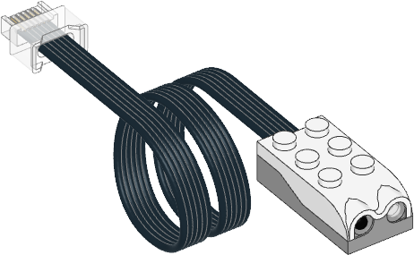

| ✅ | ✅ | ✅ | ✅ | ✅ | ✅ | ❌ |
|---|
Infrared Sensor

使用例
距離・物体の数・反射を測定する
from pybricks.parameters import Port
from pybricks.pupdevices import InfraredSensor
from pybricks.tools import wait
# Initialize the sensor.
ir = InfraredSensor(Port.A)
while True:
# Read all the information we can get from this sensor.
dist = ir.distance()
count = ir.count()
ref = ir.reflection()
# Print the values
print("Distance:", dist, "Count:", count, "Reflection:", ref)
# Move the sensor around and move your hands in front
# of it to see what happens to the values.
# Wait some time so we can read what is printed.
wait(200)